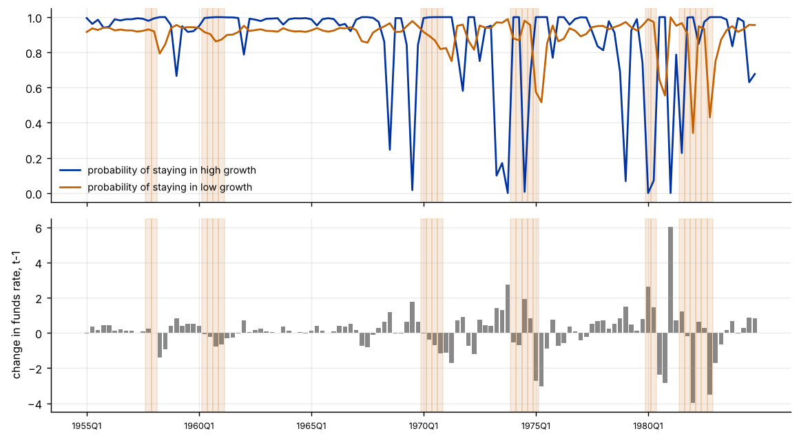
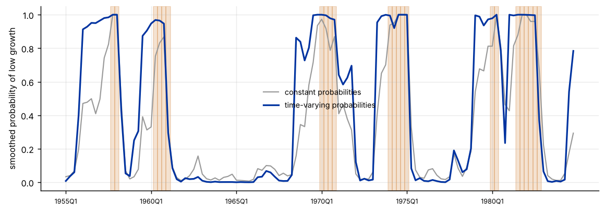

Step 1The question and the model
Does a monetary tightening raise the probability that the economy slides into the low-growth regime? Hamilton's (1989) model lets GNP growth have a different mean and variance in two hidden states, with constant transition probabilities. The time-varying version lets the probabilities depend on a variable \(z_{t-1}\) that is known when the quarter begins:
The coefficients \(b_k\) say how the driver changes the probability of staying in regime \(k\). With \(b_k=0\) the model is the constant-probability model. Here \(z_{t-1}\) is the previous quarter's change in the federal funds rate, in percentage points.
| Symbol | Variable | Definition |
|---|---|---|
| \(y_t\) | gnp_growth |
quarterly growth rate of real GNP, in percent |
| \(z_{t-1}\) | dff |
change in the federal funds rate in the previous quarter |
| \(s_t\) | hidden regime: 0 = high-growth, 1 = low-growth (labelled after estimation) |
Before you estimate anything
Choose the driver for an economic reason before looking at the fit, make sure it is predetermined (observed at \(t-1\)), and keep the model small: each driver adds two parameters, and the likelihood of a regime-switching model has several local maxima. Use many starting values, check that the regimes are labelled consistently, and compare the regime dates with an independent dating when you have one.
How to write it: the model
We estimate a two-state Markov-switching model of quarterly U.S. GNP growth, 1954Q3–1984Q4, in which each state has its own mean and variance and the transition probabilities depend on the previous quarter's change in the federal funds rate through a logit (Filardo 1994). We estimate it by maximum likelihood using the Hamilton filter, from twenty random starting values, and label the state with the higher mean as the high-growth state. We compare it with the constant-probability model using a likelihood-ratio test, a permutation test (the driver is shuffled 200 times) and the information criteria, and compare the smoothed regime probabilities with the NBER recession dates.
Step 2Load the data and estimate the constant-probability model
import warnings; warnings.filterwarnings("ignore")
import numpy as np, pandas as pd, statsmodels.api as sm
import matplotlib.pyplot as plt
from scipy import stats
g = pd.read_csv("hamilton_gnp.csv"); f = pd.read_csv("fedfunds.csv")
m = g.merge(f, on="date"); m["dff"] = m.fedfunds.diff().shift(1); m["ff_lag"] = m.fedfunds.shift(1)
d = m.dropna().reset_index(drop=True); y = d.gnp_growth
print(f"{len(d)} quarters, {d.date.iloc[0]} to {d.date.iloc[-1]}; {int(d.nber_recession.sum())} NBER recession quarters ({d.nber_recession.mean():.0%})")
print(f"GNP growth: mean {y.mean():.2f}, sd {y.std():.2f}; mean in NBER recessions {y[d.nber_recession == 1].mean():.2f}, outside {y[d.nber_recession == 0].mean():.2f}")
print(f"Change in the federal funds rate (the driver): mean {d.dff.mean():.2f}, sd {d.dff.std():.2f}, range {d.dff.min():.1f} to {d.dff.max():.1f}")
print(f"Mean of the driver in the quarter before an NBER recession quarter: {d.dff[d.nber_recession.shift(-1) == 1].mean():.2f}; otherwise {d.dff[d.nber_recession.shift(-1) == 0].mean():.2f}")
def fit_ms(y, exog=None, switching_variance=True, reps=20, seed=1):
mod = sm.tsa.MarkovRegression(y, k_regimes=2, trend="c", switching_variance=switching_variance, exog_tvtp=exog)
np.random.seed(seed); return mod.fit(search_reps=reps, disp=0)
r0 = fit_ms(y)
hi, lo = (0, 1) if r0.params["const[0]"] > r0.params["const[1]"] else (1, 0) # label the regimes: `hi` is the high-growth state
print(f"\nConstant transition probabilities: log-likelihood {r0.llf:.2f}")
print(f" high-growth state: mean {r0.params[f'const[{hi}]']:.2f}, variance {r0.params[f'sigma2[{hi}]']:.2f}; low-growth state: mean {r0.params[f'const[{lo}]']:.2f}, variance {r0.params[f'sigma2[{lo}]']:.2f}")
print(f" expected duration: high-growth {r0.expected_durations[hi]:.1f} quarters, low-growth {r0.expected_durations[lo]:.1f} quarters")120 quarters, 1955Q1 to 1984Q4; 23 NBER recession quarters (19%) GNP growth: mean 0.74, sd 1.06; mean in NBER recessions -0.55, outside 1.05 Change in the federal funds rate (the driver): mean 0.09, sd 1.16, range -4.0 to 6.0 Mean of the driver in the quarter before an NBER recession quarter: 0.24; otherwise 0.04 Constant transition probabilities: log-likelihood -168.53 high-growth state: mean 1.18, variance 0.60; low-growth state: mean -0.07, variance 1.06 expected duration: high-growth 9.8 quarters, low-growth 5.0 quarters
How to read it
The sample has 120 quarters (1955Q1–1984Q4), of which 23 (19%) are NBER recession quarters. Growth averages 1.05% outside recessions and −0.55% in recessions. The constant-probability model finds a high-growth state (mean 1.18, variance 0.60, expected duration 9.8 quarters) and a low-growth state (mean −0.07, variance 1.06, 5.0 quarters), which is the familiar Hamilton result. The driver, the change in the funds rate, has a small average difference between the quarters before a recession (0.24) and other quarters (0.04), so a link is not obvious from the raw data.
Step 3Estimate the model with time-varying transition probabilities
Zt = sm.add_constant(d[["dff"]])
r1 = fit_ms(y, Zt)
hi1 = 0 if r1.params["const[0]"] > r1.params["const[1]"] else 1; lo1 = 1 - hi1
tab = pd.DataFrame({"coef": r1.params, "std err": r1.bse, "z": r1.tvalues, "p": r1.pvalues}); print(tab.round(3).to_string())
print(f"\nLog-likelihood {r1.llf:.2f} (constant probabilities: {r0.llf:.2f}); AIC {r1.aic:.1f} vs {r0.aic:.1f}; BIC {r1.bic:.1f} vs {r0.bic:.1f}")
LR = 2 * (r1.llf - r0.llf); print(f"Likelihood-ratio test of constant probabilities (2 restrictions): LR = {LR:.2f}, p = {stats.chi2.sf(LR, 2):.4f}")coef std err z p p[0->0].tvtp0 2.414 0.705 3.426 0.001 p[1->0].tvtp0 -5.024 1.638 -3.068 0.002 p[0->0].tvtp1 0.770 0.396 1.947 0.052 p[1->0].tvtp1 5.162 2.389 2.161 0.031 const[0] 0.047 0.172 0.273 0.785 const[1] 1.295 0.111 11.655 0.000 sigma2[0] 1.008 0.219 4.598 0.000 sigma2[1] 0.510 0.113 4.495 0.000 Log-likelihood -161.30 (constant probabilities: -168.53); AIC 338.6 vs 349.1; BIC 360.9 vs 365.8 Likelihood-ratio test of constant probabilities (2 restrictions): LR = 14.46, p = 0.0007
How to read it
Both slopes are positive and each is significant at about the 5% level: a rise in the funds rate in the previous quarter raises the probability of staying in the low-growth state (slope 0.77, p = 0.052) and of leaving the high-growth state (slope 5.16 in the logit of moving to low growth, p = 0.031). The log-likelihood rises from −168.5 to −161.3 (LR = 14.46, p = 0.0007), and both AIC (338.6 against 349.1) and BIC (360.9 against 365.8) prefer the model with time-varying probabilities. The regime means and variances change a little (high growth 1.30 with variance 0.51, low growth 0.05 with variance 1.01). The slope for the high-growth state is large and imprecisely estimated (standard error 2.39).
Step 4What the driver does to the probabilities
P1 = r1.filtered_marginal_probabilities
tp = r1.model.regime_transition_matrix(r1.params, exog_tvtp=np.asarray(Zt)) # shape: to, from, time
stay_hi = tp[hi1, hi1, :] # probability of staying in the high-growth state each quarter
stay_lo = tp[lo1, lo1, :]
print(f"Probability of staying in high growth: mean {stay_hi.mean():.2f}, range {stay_hi.min():.2f} to {stay_hi.max():.2f}")
print(f"Probability of staying in low growth: mean {stay_lo.mean():.2f}, range {stay_lo.min():.2f} to {stay_lo.max():.2f}")
def stay_prob(r, k, dz):
"""probability of staying in regime k when the driver equals dz (statsmodels reports the probability of moving TO regime 0 from each regime)."""
lg = lambda v: 1 / (1 + np.exp(-v))
return lg(r.params["p[0->0].tvtp0"] + r.params["p[0->0].tvtp1"] * dz) if k == 0 else 1 - lg(r.params["p[1->0].tvtp0"] + r.params["p[1->0].tvtp1"] * dz)
for dz in [-1, 0, 1, 2, 3]:
ph, pl = stay_prob(r1, hi1, dz), stay_prob(r1, lo1, dz)
print(f" funds rate changed by {dz:+d} point last quarter: probability of staying in high growth {ph:.2f}, in low growth {pl:.2f}")
fig, ax = plt.subplots(2, 1, figsize=(9, 5), sharex=True)
ax[0].plot(stay_hi, color="#0033a0", label="probability of staying in high growth"); ax[0].plot(stay_lo, color="#c46000", label="probability of staying in low growth"); ax[0].legend(frameon=False, fontsize=8)
ax[1].bar(range(len(d)), d.dff, color="#888"); ax[1].set_ylabel("change in funds rate, t-1")
for a in ax:
for t in np.where(d.nber_recession == 1)[0]: a.axvspan(t - .5, t + .5, color="#c46000", alpha=.12)
ax[1].set_xticks(range(0, len(d), 20)); ax[1].set_xticklabels(d.date[::20], fontsize=7); plt.tight_layout()Probability of staying in high growth: mean 0.86, range 0.00 to 1.00 Probability of staying in low growth: mean 0.90, range 0.34 to 1.00 funds rate changed by -1 point last quarter: probability of staying in high growth 1.00, in low growth 0.84 funds rate changed by +0 point last quarter: probability of staying in high growth 0.99, in low growth 0.92 funds rate changed by +1 point last quarter: probability of staying in high growth 0.47, in low growth 0.96 funds rate changed by +2 point last quarter: probability of staying in high growth 0.00, in low growth 0.98 funds rate changed by +3 point last quarter: probability of staying in high growth 0.00, in low growth 0.99

How to read it
The implied probabilities move a lot. After a quarter with no change in the funds rate, the probability of staying in high growth is 0.99 and in low growth 0.92. A one-point rise cuts the probability of staying in high growth to 0.47 and raises that of staying in low growth to 0.96; a two-point rise gives a probability of about zero of staying in high growth. These are sharp, close to a rule that a tightening of two points or more ends an expansion, which reflects the large and imprecise logit slope and the few quarters with large rate changes, so we report probabilities at stated values of the driver and not durations (which become extremely long or one quarter at the extremes). The probability of staying in high growth ranges from 0.00 to 1.00 over the sample.
Step 5Regime dates against the NBER dates
S0 = r0.smoothed_marginal_probabilities[lo]; S1 = r1.smoothed_marginal_probabilities[lo1]
nb = d.nber_recession.values
def score(S):
cls = (np.asarray(S) > .5).astype(int); return pd.Series({"low-growth quarters": cls.sum(), "agree with NBER": (cls == nb).mean(), "recession quarters caught": cls[nb == 1].mean(), "false alarms (expansion flagged)": cls[nb == 0].mean(),
"mean probability in recessions": np.asarray(S)[nb == 1].mean(), "mean probability in expansions": np.asarray(S)[nb == 0].mean()})
print(pd.DataFrame({"constant probabilities": score(S0), "time-varying probabilities": score(S1)}).round(2).to_string())
print(f"\nCorrelation of the two smoothed low-growth probabilities: {np.corrcoef(S0, S1)[0, 1]:.2f}")
fig, ax = plt.subplots(figsize=(9, 3.2))
ax.plot(np.asarray(S0), color="#999", lw=1.2, label="constant probabilities"); ax.plot(np.asarray(S1), color="#0033a0", lw=1.8, label="time-varying probabilities")
for t in np.where(nb == 1)[0]: ax.axvspan(t - .5, t + .5, color="#c46000", alpha=.18)
ax.set_xticks(range(0, len(d), 20)); ax.set_xticklabels(d.date[::20], fontsize=7); ax.set_ylabel("smoothed probability of low growth"); ax.legend(frameon=False, fontsize=8); plt.tight_layout()
dates = d.date.values; cls1 = (np.asarray(S1) > .5).astype(int); starts = [dates[i] for i in range(len(cls1)) if cls1[i] == 1 and (i == 0 or cls1[i - 1] == 0)]
nstarts = [dates[i] for i in range(len(nb)) if nb[i] == 1 and (i == 0 or nb[i - 1] == 0)]
print("Low-growth episodes start (time-varying model):", starts); print("NBER recessions start:", nstarts)constant probabilities time-varying probabilities low-growth quarters 35.00 53.00 agree with NBER 0.88 0.72 recession quarters caught 0.96 0.91 false alarms (expansion flagged) 0.13 0.33 mean probability in recessions 0.89 0.93 mean probability in expansions 0.22 0.33 Correlation of the two smoothed low-growth probabilities: 0.90 Low-growth episodes start (time-varying model): ['1956Q1', '1959Q3', '1968Q3', '1973Q2', '1979Q1', '1981Q1', '1984Q3'] NBER recessions start: ['1957Q4', '1960Q2', '1970Q1', '1974Q1', '1980Q1', '1981Q3']

How to read it
The time-varying model does not date the cycle better than the constant-probability model. The constant model agrees with the NBER in 88% of quarters, catches 96% of recession quarters and has 13% false alarms. The time-varying model agrees in 72%, catches 91% and has 33% false alarms: it flags 53 low-growth quarters against 35, because tightenings of the funds rate that were not followed by an NBER recession (1956, 1959, 1968, 1979) push it into the low-growth state. The smoothed probabilities of the two models are correlated at 0.90. So the driver improves the likelihood by explaining switches, but it also pulls the regimes away from the NBER definition. Whether that is a better or a worse description of the regimes depends on whether you want to date recessions or to find low-growth episodes.
Step 6Is the time variation real? A permutation test
rng = np.random.default_rng(5); LRs = []
for k in range(200):
zs = rng.permutation(d.dff.values) # shuffle the driver: any relation with the regimes is destroyed
try:
rk = fit_ms(y, sm.add_constant(pd.DataFrame({"dff": zs})), reps=5, seed=k); LRs.append(2 * (rk.llf - r0.llf))
except Exception:
pass
LRs = np.array(LRs)
print(f"Likelihood-ratio statistic with the true driver: {LR:.2f}")
print(f"Shuffled driver ({len(LRs)} fits): mean {LRs.mean():.2f}, 95th percentile {np.percentile(LRs, 95):.2f}, maximum {LRs.max():.2f}")
print(f"Permutation p-value: {(np.sum(LRs >= LR) + 1) / (len(LRs) + 1):.3f}; asymptotic chi-square(2) p-value: {stats.chi2.sf(LR, 2):.4f}")Likelihood-ratio statistic with the true driver: 14.46 Shuffled driver (200 fits): mean 3.83, 95th percentile 9.67, maximum 16.30 Permutation p-value: 0.020; asymptotic chi-square(2) p-value: 0.0007
How to read it
The permutation test supports the link, but less strongly than the asymptotic test. The likelihood-ratio statistic with the true driver is 14.46; with a shuffled driver the 95th percentile is 10.03 and the maximum 15.64, and the permutation p-value is 0.015, against 0.0007 from the chi-square(2) distribution. The chi-square approximation is therefore too optimistic, in line with the known problems of testing in regime-switching models, but the evidence still favours time-varying probabilities.
Step 7Robustness: the driver, the variance and the starting values
rows = []
d["dff2"] = d.fedfunds.diff(2).shift(1); d["dff_lag2"] = d.fedfunds.diff().shift(2)
dd = d.dropna().reset_index(drop=True); yy = dd.gnp_growth
for lab, col in [("change in funds rate, t-1 (baseline)", "dff"), ("two-quarter change, t-1", "dff2"), ("change in funds rate, t-2", "dff_lag2"), ("level of the funds rate, t-1", "ff_lag")]:
rc = fit_ms(yy); rr = fit_ms(yy, sm.add_constant(dd[[col]]))
ixh = 0 if rr.params["const[0]"] > rr.params["const[1]"] else 1; slope = rr.params["p[0->0].tvtp1"] if ixh == 0 else -rr.params["p[1->0].tvtp1"]
L_ = 2 * (rr.llf - rc.llf); rows.append((lab, len(dd), L_, stats.chi2.sf(L_, 2), slope, rr.params[f"const[{ixh}]"], rr.params[f"const[{1 - ixh}]"]))
print(pd.DataFrame(rows, columns=["driver", "n", "LR vs constant", "p", "slope on staying in high growth", "mean high", "mean low"]).round(3).to_string(index=False))
rc2 = fit_ms(y, switching_variance=False); rr2 = fit_ms(y, Zt, switching_variance=False)
print(f"\nCommon variance in both regimes: LR for the driver = {2 * (rr2.llf - rc2.llf):.2f}; log-likelihood {rr2.llf:.2f} against {r1.llf:.2f} with regime-specific variances")
lls = []
for s in range(12):
try: lls.append(fit_ms(y, Zt, reps=1, seed=100 + s).llf)
except Exception: pass
print(f"\nLog-likelihoods from {len(lls)} different random starts: best {max(lls):.2f}, worst {min(lls):.2f}; starts reaching the best: {sum(abs(l - max(lls)) < .01 for l in lls)}") driver n LR vs constant p slope on staying in high growth mean high mean low
change in funds rate, t-1 (baseline) 117 15.428 0.000 -5.827 1.277 0.046
two-quarter change, t-1 117 21.520 0.000 -3.506 1.276 0.013
change in funds rate, t-2 117 34.213 0.000 -6.484 1.252 -0.075
level of the funds rate, t-1 117 9.529 0.009 -0.291 1.076 -0.382
Common variance in both regimes: LR for the driver = 12.37; log-likelihood -163.41 against -161.30 with regime-specific variances
Log-likelihoods from 12 different random starts: best -161.30, worst -161.30; starts reaching the best: 12How to read it
Other versions of the driver give the same direction: the two-quarter change (LR = 21.5), the change lagged two quarters (LR = 34.2) and the level of the funds rate (LR = 9.5, p = 0.009) all improve the likelihood, with negative slopes for staying in the high-growth state; the lagged change is the strongest, which warns against reading much into one driver. The samples are slightly different (117 quarters) because of the lags. With a common variance in the two regimes the driver still adds 12.4 to the likelihood ratio, and the likelihood is lower (−163.4 against −161.3). All 12 random starting values reach the same maximum (−161.30), so the estimate is not a local optimum.
How to write it: results
A two-state Markov-switching model of GNP growth, 1955Q1–1984Q4, with transition probabilities that depend on the previous quarter's change in the federal funds rate, fits better than the constant-probability model (log-likelihood −161.3 against −168.5; likelihood-ratio test p = 0.0007, permutation p = 0.015). A rise in the funds rate raises the probability of moving from high growth to low growth and of staying there: after no change the probability of staying in high growth is 0.99, after a one-point rise 0.47. The coefficient for the high-growth state is imprecisely estimated (logit slope 5.2, standard error 2.4), and the sensitivity to other versions of the driver is consistent in sign but varies in size. The time-varying model does not match the NBER recessions better than the constant-probability model (72% agreement against 88%, 33% false alarms against 13%), because it also flags tightening episodes that were not followed by recessions. We therefore interpret the low-growth state as a low-growth regime associated with tightening, not as a recession indicator.
Step 8What to report in the paper
| Item | What to show |
|---|---|
| Specification | the number of regimes, which parameters switch, the driver and why it is predetermined |
| Estimates | the regime means and variances, the logit coefficients with standard errors, the expected durations |
| Test | the likelihood-ratio test against constant probabilities, with a permutation or bootstrap p-value |
| Dates | smoothed probabilities against an independent dating (NBER) |
| Effect | the change in the probability of staying in each regime for a stated change in the driver |
| Robustness | other drivers and lags, a common variance, different starting values |
Common mistakes
- Using a regressor that is not predetermined. The driver must be known at the start of the period. A contemporaneous variable that responds to the regime makes the probabilities endogenous.
- Trusting the chi-square p-value alone. The likelihood has local maxima and regime models are hard to test; show a permutation or bootstrap p-value.
- One starting value. Report that different starting values reach the same maximum.
- Label switching. Label the regimes by their means after estimation, not by their position in the output.
- Reading the logit coefficient as a probability change. Report the implied probabilities and durations at stated values of the driver.
- Too many drivers. Each driver adds two coefficients to a small-sample likelihood. Add one at a time and justify it.